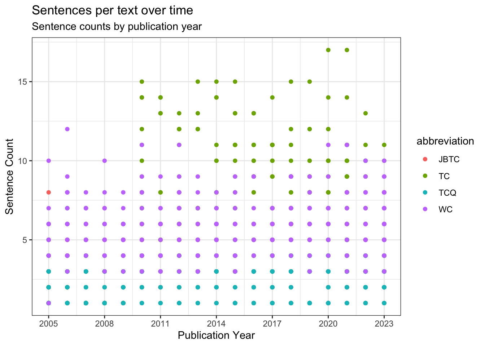
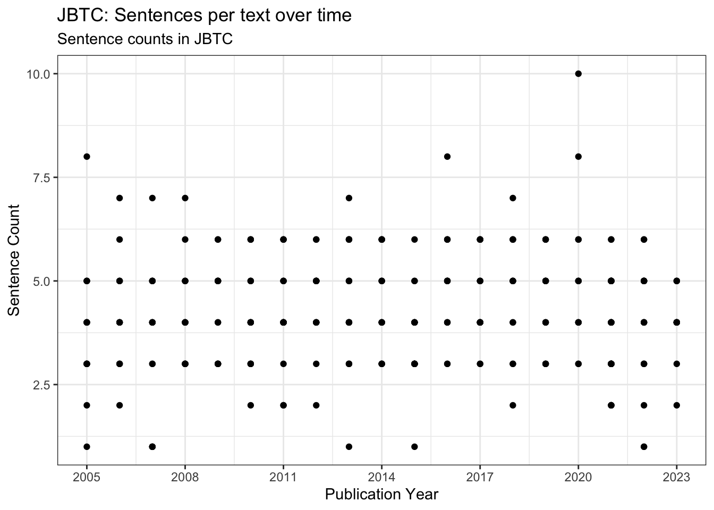
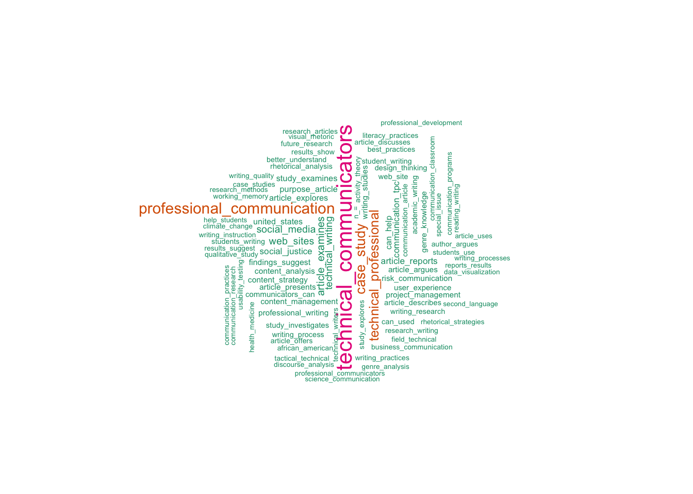

library(tidyverse)#install.packages("Rtools") # you may need to install Rtools to install all the quanteda packages#install.packages("remotes")#install.packages("quanteda")#install.packages("readtext")#install.packages("spacyr")#install.packages("quanteda.textmodels")#install.packages("quanteda.textstats")#install.packages("quanteda.textplots")#remotes::install_github("kbenoit/quanteda.dictionaries")library(quanteda)library(quanteda.dictionaries)library(quanteda.textmodels)library(quanteda.textplots)library(quanteda.textstats)
Load data
Code
#install.packages("here")library(here)# Use "here" to set the working directory here::here()
# Use "here" to define the relative path to your datadata_file<-here("demos/week03/data_out/full_data.RData")load(data_file)glimpse(full_data)
Rows: 1,537
Columns: 9
$ source_title <chr> "JOURNAL OF BUSINESS AND TECHNICAL COMMUNICATION…
$ author_full_names <chr> "Wickman, Chad", "DeJeu, Emily Barrow", "DeVasto…
$ article_title <chr> "Genre and Metagenre in Biomedical Research Writ…
$ abstract <chr> "The use of reporting guidelines is an establish…
$ cited_references <chr> NA, NA, NA, NA, NA, NA, NA, NA, NA, NA, NA, NA, …
$ cited_reference_count <dbl> NA, NA, NA, NA, NA, NA, NA, NA, NA, NA, NA, NA, …
$ publication_year <dbl> 2023, 2022, 2016, 2009, 2009, 2020, 2016, 2012, …
$ publication_type <chr> "J", "J", "J", "J", "J", "J", "J", "J", "J", "J"…
$ abbreviation <chr> "JBTC", "JBTC", "JBTC", "JBTC", "JBTC", "JBTC", …
Creating a Corpus object
A Quanteda Corpus is a special form of a character vector that includes metadata about the corpus and the “documents” within the corpus. In this case, our corpus includes all the articles results in our CSV and each article is a document.
Create a “text” column for analysis
Code
# Creates a new column in full_data from the title and abstract (separated by a tilde)full_data$text<-paste(full_data$article_title, full_data$abstract, sep =" ~ ")# check the columnfull_data$text[2:3]
[1] "The Ethics of Delivering Bad News: Evaluating Impression Management Strategies in Corporate Financial Reporting ~ Business communication textbooks offer impression management (IM) strategies to help students learn how to soften bad news. But corporations sometimes use these strategies in ethically questionable ways. This article analyzes IM strategies in a landmark case of ethically dubious corporate financial reporting. Findings suggest that the company, Ivax, manipulated three standard IM strategies by overamplifying its power to fix a financial crisis, substantially downplaying bad news, and concealing damaging information. Ivax also used a fourth, less familiar strategy: It buried contradictory information in legal disclaimers. Instructors need to help students become ethical writers who avoid questionable IM strategies like these."
[2] "Stasis and Matters of Concern: The Conviction of the L'Aquila Seven ~ On October 22, 2012, six scientists and one civil servant were convicted of manslaughter for failing to properly warn the people of L'Aquila, Italy, of an impending earthquake that resulted in over 300 deaths and 1,500 injuries. This article investigates a key event leading up to this conviction: An emergency meeting of scientists, civil servants, and politicians to determine whether or not an advanced warning should be issued to the residents of L'Aquila. The following investigation of this emergency meeting uses functional stasis analysis to identify the primary breakdown in deliberation that ultimately led to a message of calm and reassurance immediately prior to the devastating earthquake. The results provide insights into not only the events in L'Aquila but also broader issues of risk, uncertainty, fact, and value in science-policy deliberation."
Create the corpus
Code
# creates the corpus objectcorp<-corpus(full_data)# summary of the corpus (including metadata for the texts)summary(corp, n =3)
Corpus consisting of 1537 documents, showing 3 documents:
Text Types Tokens Sentences source_title
text1 97 149 4 JOURNAL OF BUSINESS AND TECHNICAL COMMUNICATION
text2 94 130 6 JOURNAL OF BUSINESS AND TECHNICAL COMMUNICATION
text3 102 158 4 JOURNAL OF BUSINESS AND TECHNICAL COMMUNICATION
author_full_names
Wickman, Chad
DeJeu, Emily Barrow
DeVasto, Danielle; Graham, S. Scott; Zamparutti, Louise
article_title
Genre and Metagenre in Biomedical Research Writing
The Ethics of Delivering Bad News: Evaluating Impression Management Strategies in Corporate Financial Reporting
Stasis and Matters of Concern: The Conviction of the L'Aquila Seven
abstract
The use of reporting guidelines is an established yet still-evolving practice in the field of biomedicine. These documents are often linked to common methodologies (e.g., randomized clinical trials); they include multiple textual artifacts (e.g., checklists, flow diagrams) and have a history that is coextensive with the emergence and ongoing development of evidence-based medicine (e.g., as an epistemological orientation to research and decision making). Drawing on the concept of metagenre, this article examines how practitioners use reporting guidelines to define and regulate the boundaries of biomedical research and writing activity. The analysis, focusing on one prominent set of guidelines, shows how practitioners use the genre-metagenre dynamic to promote strategic intervention while upholding traditional principles and standards for evidence-based research and communication.
Business communication textbooks offer impression management (IM) strategies to help students learn how to soften bad news. But corporations sometimes use these strategies in ethically questionable ways. This article analyzes IM strategies in a landmark case of ethically dubious corporate financial reporting. Findings suggest that the company, Ivax, manipulated three standard IM strategies by overamplifying its power to fix a financial crisis, substantially downplaying bad news, and concealing damaging information. Ivax also used a fourth, less familiar strategy: It buried contradictory information in legal disclaimers. Instructors need to help students become ethical writers who avoid questionable IM strategies like these.
On October 22, 2012, six scientists and one civil servant were convicted of manslaughter for failing to properly warn the people of L'Aquila, Italy, of an impending earthquake that resulted in over 300 deaths and 1,500 injuries. This article investigates a key event leading up to this conviction: An emergency meeting of scientists, civil servants, and politicians to determine whether or not an advanced warning should be issued to the residents of L'Aquila. The following investigation of this emergency meeting uses functional stasis analysis to identify the primary breakdown in deliberation that ultimately led to a message of calm and reassurance immediately prior to the devastating earthquake. The results provide insights into not only the events in L'Aquila but also broader issues of risk, uncertainty, fact, and value in science-policy deliberation.
cited_references cited_reference_count publication_year publication_type
<NA> NA 2023 J
<NA> NA 2022 J
<NA> NA 2016 J
abbreviation
JBTC
JBTC
JBTC
Corpus consisting of 1,537 documents and 9 docvars.
text1 :
"Genre and Metagenre in Biomedical Research Writing ~ The use..."
text2 :
"The Ethics of Delivering Bad News: Evaluating Impression Man..."
text3 :
"Stasis and Matters of Concern: The Conviction of the L'Aquil..."
text4 :
"Integrating Social Media Into Existing Work Environments The..."
text5 :
"Practitioner Research Instruction A Neglected Curricular Are..."
text6 :
"Legally Minded Technical Communicators: A Case Study of a Le..."
[ reached max_ndoc ... 1,531 more documents ]
Plot descriptive statistics
Plot metadata: tokens per text, by journal
Code
# get metadatatokeninfo<-summary(corp, n =1537)# plotif(require(ggplot2))ggplot(data =tokeninfo, aes(x =publication_year, y =Tokens, group =abbreviation, color =abbreviation))+geom_point()+scale_x_continuous(labels =c(seq(2005, 2023, 3)), breaks =seq(2005, 2023, 3))+labs( title ="Tokens per text over time", subtitle ="Token counts by publication year", x ="Publication Year", y ="Tokens Count")+theme_bw()
Plot metadata: sentences per text, by journal
We can plot sentences in the title+abstract for each article (and color-coded by journal)
Code
# how many unique sentence values are there?unique(tokeninfo$Sentences)
[1] 4 6 3 5 7 1 10 2 8 15 9 11 12 14 13 17
Code
# plot tokeninfo if(require(ggplot2))ggplot(data =tokeninfo, aes(x =publication_year, y =Sentences, group =abbreviation, color =abbreviation))+geom_point()+scale_x_continuous(labels =c(seq(2005, 2023, 3)), breaks =seq(2005, 2023, 3))+labs( title ="Sentences per text over time", subtitle ="Sentence counts by publication year", x ="Publication Year", y ="Sentence Count")+theme_bw()

But wait, where are all the JBTC articles?!
Code
# get a list of unique sentence lengths in JBTC title+abstractsunique(tokeninfo$Sentences[tokeninfo$abbreviation=="JBTC"])
[1] 4 6 3 5 7 1 10 2 8
Code
# get a list of unique years among JBTC observationsunique(tokeninfo$publication_year[tokeninfo$abbreviation=="JBTC"])
It seems like we have JBTC articles of varying sentence length across multiple years…
Subset a corpus
Let’s investigate further. Use the corpus_subset function to keep only texts from JBTC.
Code
# corpus_subset(corp, abbreviation == "JBTC")jbtc_tokeninfo<-summary(corpus_subset(corp, abbreviation=="JBTC"), n =300)
Then visualize sentence counts again, this time for just JBTC…
Code
if(require(ggplot2))ggplot(data =jbtc_tokeninfo, aes(x =publication_year, y =Sentences))+geom_point()+scale_x_continuous(labels =c(seq(2005, 2023, 3)), breaks =seq(2005, 2023, 3))+labs( title ="JBTC: Sentences per text over time", subtitle ="Sentence counts in JBTC", x ="Publication Year", y ="Sentence Count")+theme_bw()

Ok, so maybe it’s just a problem with the plot?
Add a layer: # of observations with x sentences
Code
# use geom_count instead of geom_point to let size reflect the count of the pointsggplot(data =jbtc_tokeninfo, aes(x =publication_year, y =Sentences))+geom_count()+scale_x_continuous(labels =c(seq(2005, 2023, 3)), breaks =seq(2005, 2023, 3))+labs( title ="JBTC: Sentences per text over time", subtitle ="Sentence counts in JBTC", x ="Publication Year", y ="Sentence Count")+theme_bw()
Add size to all journal sentence counts
Code
ggplot(data =tokeninfo, aes(x =publication_year, y =Sentences, group =abbreviation, color =abbreviation))+geom_count()+scale_x_continuous(labels =c(seq(2005, 2023, 3)), breaks =seq(2005, 2023, 3))+labs( title ="Sentences per text over time", subtitle ="Sentence counts by publication year", x ="Publication Year", y ="Sentence Count")+theme_bw()
It’s not perfect, but definitely better.
Exploring corpus texts
But token and sentence counts probably aren’t the most interesting aspect of the titles and abstracts…
KWIC: search for patterns
We can search for patterns in multiple ways:
single word: kwic(data_tokens, pattern = "usability")
string of characters: kwic(data_tokens, pattern = "user-*")
We can search for usability and surrounding words.
Quanteda Tokens object
Tokens: Each element of a tokens object typically represents a single word or a term. However, tokens can also represent larger text units such as sentences or paragraphs, depending on the tokenization process applied.
Code
# create a tokens objectdata_tokens<-tokens(corp)# data, pattern, number of tokens before and after kwic_usability<-kwic(data_tokens, pattern ="usability", 5)# display the first 10 matcheskwic_usability[0:10]
Keyword-in-context with 10 matches.
[text16, 102] a practical influence on the | usability |
[text79, 97] and technology; the cultural | usability |
[text126, 94] answered questions about the tool's | usability |
[text165, 42] transparency, learnability, and | usability |
[text165, 96] supported by task-based documentation, | usability |
[text168, 117] similar contexts: content, | usability |
[text264, 16] Tracking as a Component of | Usability |
[text273, 6] Listening to Students: A | Usability |
[text273, 79] how students use feedback. | Usability |
[text273, 107] . This article reports on | usability |
of assembly instructions. This
research conducted and located accountability
and communicative effectiveness, and
. Looking at questions asked
problems were more prominent.
, and overall visual appeal
and Sustainability ~ Framed around
Evaluation of Instructor Commentary ~
evaluation is ideally equipped for
testing of commentary provided to
Keyword-in-context with 6 matches.
[text1158, 6] Revising the Online Classroom: | Usability |
[text1158, 26] by the authors to use | usability |
[text1158, 59] institutions can create their own | usability |
[text1190, 41] format. It investigates the | usability |
[text1190, 62] as YouTube analytics data, | usability |
[text1306, 70] of argument effectiveness, document | usability |
Testing for Training Online Technical
testing as a component of
testing protocols for formative online
and design-implications of a live-action
, and comprehension assessments.
, and professionalism. Three
Keyword-in-context with 6 matches.
[text4, 129] and repurposing their | user-generated |
[text37, 61] tagging to compile | user-specific |
[text49, 119] emphasis on creating | user-centered |
[text172, 51] well acquainted with | user-centered |
[text172, 73] data collected within | user-centered |
[text190, 33] as interactive, | user-generated |
data.
metadata on information
risk information that
design ( UCD
research and instead
documentation and describes
KWIC for “social justice”
Code
# show context of the first six occurrences of 'social justice'kwic(data_tokens, pattern =phrase("social justice"))%>%head()
Keyword-in-context with 6 matches.
[text25, 131:132] It encourages a response to | social justice |
[text103, 12:13] Feminist Scholarship Can Inform the | Social Justice |
[text103, 33:34] do, and can inform | social justice |
[text103, 45:46] communication ( TPC ) even | social justice |
[text103, 68:69] that are relevant to future | social justice |
[text103, 124:125] methodologies and theories to enhance | social justice |
exigencies, invites participation from
Turn ~ This article calls
work in technical and professional
work that is not explicitly
work: ( a )
scholarship.
Tokens consisting of 3 documents and 9 docvars.
text1 :
[1] "Genre" "and" "Metagenre" "in" "Biomedical"
[6] "Research" "Writing" "~" "The" "use"
[11] "of" "reporting"
[ ... and 137 more ]
text2 :
[1] "The" "Ethics" "of" "Delivering" "Bad"
[6] "News" ":" "Evaluating" "Impression" "Management"
[11] "Strategies" "in"
[ ... and 118 more ]
text3 :
[1] "Stasis" "and" "Matters" "of" "Concern"
[6] ":" "The" "Conviction" "of" "the"
[11] "L'Aquila" "Seven"
[ ... and 146 more ]
Notice what counts as a token by default.
Preprocessing
We may want to remove certain words or characters that aren’t salient for our analysis
Remove punctuation, separators, and numbers
Code
# create a tokens object without punctuation, separators, and numberstokens<-tokens(corp, remove_punct =TRUE, remove_separators =TRUE, remove_numbers =TRUE)# check the resulttokens[1:3]
Tokens consisting of 3 documents and 9 docvars.
text1 :
[1] "Genre" "and" "Metagenre" "in" "Biomedical"
[6] "Research" "Writing" "~" "The" "use"
[11] "of" "reporting"
[ ... and 116 more ]
text2 :
[1] "The" "Ethics" "of" "Delivering" "Bad"
[6] "News" "Evaluating" "Impression" "Management" "Strategies"
[11] "in" "Corporate"
[ ... and 103 more ]
text3 :
[1] "Stasis" "and" "Matters" "of" "Concern"
[6] "The" "Conviction" "of" "the" "L'Aquila"
[11] "Seven" "~"
[ ... and 127 more ]
Tokens consisting of 3 documents and 9 docvars.
text1 :
[1] "Genre" "Metagenre" "Biomedical" "Research"
[5] "Writing" "use" "reporting" "guidelines"
[9] "established" "yet" "still-evolving" "practice"
[ ... and 69 more ]
text2 :
[1] "Ethics" "Delivering" "Bad" "News" "Evaluating"
[6] "Impression" "Management" "Strategies" "Corporate" "Financial"
[11] "Reporting" "Business"
[ ... and 76 more ]
text3 :
[1] "Stasis" "Matters" "Concern" "Conviction" "L'Aquila"
[6] "Seven" "October" "six" "scientists" "one"
[11] "civil" "servant"
[ ... and 67 more ]
Creating a document-feature matrix
Quanteda uses a data structure called a document-feature matrix:
Document: In a DFM, each row represents a document or text unit. This can be a single document, a sentence, a paragraph, or any other defined text unit. In our case, it’s a title + abstract.
Feature: Each column represents a feature, typically a word or a term that appears in the documents. These features are usually extracted from the text through tokenization, and they can be single words or multi-word phrases.
Matrix: The DFM is a two-dimensional matrix where the rows correspond to documents, and the columns correspond to features. The values in the matrix represent the frequency of each feature in each document, but they can also be transformed into other measures such as term frequency-inverse document frequency (TF-IDF) scores.
In this context, “sparse” refers to a type of data structure used to efficiently work with large data. In a sparse matrix, the majority of the elements have a value of zero. If your dfm is 99.56% sparse, it means that only .04% of the entries are something other than 0.
# wordcloud with parametersset.seed(100)textplot_wordcloud(dfm, min_count =20, # include word only if it occurs at least n times in data set random_order =FALSE, rotation =0.25, color =RColorBrewer::brewer.pal(8, "Dark2"))
technical communication writing study article
1546 1475 1377 960 913
students research analysis results can
772 751 577 485 483
professional use design rhetorical work
468 457 453 445 427
social content data practices using
412 388 386 360 356
DFM: Grouping by variables
Code
# group the dfm by a variable (docvar): journaldfm_journ<-dfm%>%dfm_group(groups =abbreviation)# sort features by frequency and then viewdfm_sort(dfm_journ)
Document-feature matrix of: 4 documents, 12,399 features (54.05% sparse) and 3 docvars.
features
docs technical communication writing study article students research analysis
JBTC 244 375 158 236 212 131 119 102
TC 716 508 102 225 144 127 192 157
TCQ 561 531 149 175 297 154 183 110
WC 25 61 968 324 260 360 257 208
features
docs results can
JBTC 84 107
TC 270 193
TCQ 39 95
WC 92 88
[ reached max_nfeat ... 12,389 more features ]
Create a comparison cloud
Code
# cloud that compares top features for each journalcomparison_cloud<-dfm_journ%>%dfm_trim(min_termfreq =25, verbose =FALSE)%>%textplot_wordcloud(comparison =TRUE)
It’s common joke in computational humanities and social scientists that “colleagues don’t let colleagues make wordclouds,” but maybe this one can help us generate or refine some RQs?
Plot relative frequencies
Quanteda’s texstat_frequency allows to plot the most frequent words in terms of relative frequency by group
Code
#help("dfm_weight")#help("textstat_frequency")# calculate the proportional weight (the proportion of the feature count relative to total feature count)dfm_weight_journ<-dfm_journ%>%dfm_weight(scheme ="prop")# Calculate relative frequency by journalfreq_weight<-textstat_frequency(dfm_weight_journ, n =15, groups =dfm_weight_journ$abbreviation)ggplot(data =freq_weight, aes(x =nrow(freq_weight):1, y =frequency))+geom_point()+facet_wrap(~group, scales ="free")+coord_flip()+scale_x_continuous(breaks =nrow(freq_weight):1, labels =freq_weight$feature)+labs(x =NULL, y ="Relative frequency", title ="Most frequent terms as a proportion of terms in the journal")
It seems like some of these terms are parts of phrases, no?
More, hastily
Plot “keyness” in TCQ and TC
Keyness is a score for top features that occur differentially across categories or groups.
Code
# get info on "keyness"help("textstat_keyness")# Subset initial corpus to retain TCQ and TC tc_v_tcq_corpus<-corpus_subset(corp, abbreviation%in%c("TCQ", "TC"))# Create a dfm grouped by journal (abbreviation)tc_v_tcq_dfm<-tokens(tc_v_tcq_corpus, remove_punct =TRUE)%>%tokens_remove(stopwords("english"))%>%tokens_remove("~")%>%tokens_group(groups =abbreviation)%>%dfm()# Calculate keyness and determine TC as target groupresult_keyness<-textstat_keyness(tc_v_tcq_dfm, target ="TC")# Plot estimated word keynesstextplot_keyness(result_keyness)
Ngrams
You can generate n-grams from a tokens object using tokens_ngrams().
Code
# creating a tokens object from a corpustoks<-tokens(corp, remove_punct =TRUE, remove_separators =TRUE, remove_numbers =TRUE)%>%tokens_remove(stopwords("en"))%>%tokens_remove("~")# generating ngrams from a tokens objecttoks_ngram<-tokens_ngrams(toks, n =2)# specify combinations, e.g. 2 and 3 word combos -> (toks, n = 2:3)# view result: first 10 ngrams in the first articlehead(toks_ngram[[1]], 10)
# create dfm from bigrams tokens object and group by journal dfm_bigrams<-toks_ngram%>%dfm()%>%dfm_group(groups =abbreviation)# another wordcloud...why not!set.seed(101)textplot_wordcloud(dfm_bigrams, min_count =20, # include word only if it occurs at least n times in data set random_order =FALSE, rotation =0.25, color =RColorBrewer::brewer.pal(8, "Dark2"))

Code
# cloud that compares top bigrams for each journaldfm_bigrams%>%dfm_trim(min_termfreq =15, verbose =FALSE)%>%textplot_wordcloud(comparison =TRUE)
---title: "Wk 03: Exploring TC journals, (pt 3)"---## OverviewWe start with data from four journals## Load libraries and dataFor this analysis, we'll be using the R package [Quanteda: Quantitative Analysis of Textual Data](http://quanteda.io/index.html). ```{r}library(tidyverse)#install.packages("Rtools") # you may need to install Rtools to install all the quanteda packages#install.packages("remotes")#install.packages("quanteda")#install.packages("readtext")#install.packages("spacyr")#install.packages("quanteda.textmodels")#install.packages("quanteda.textstats")#install.packages("quanteda.textplots")#remotes::install_github("kbenoit/quanteda.dictionaries")library(quanteda)library(quanteda.dictionaries)library(quanteda.textmodels)library(quanteda.textplots)library(quanteda.textstats)```## Load data```{r}#install.packages("here")library(here)# Use "here" to set the working directory here::here()getwd()# Use "here" to define the relative path to your datadata_file <-here("demos/week03/data_out/full_data.RData")load(data_file)glimpse(full_data)```## Creating a Corpus objectA Quanteda Corpus is a special form of a character vector that includes metadata about the corpus and the "documents" within the corpus. In this case, our corpus includes all the articles results in our CSV and each article is a document. ### Create a "text" column for analysis```{r}# Creates a new column in full_data from the title and abstract (separated by a tilde)full_data$text <-paste(full_data$article_title, full_data$abstract, sep =" ~ ")# check the columnfull_data$text[2:3]```### Create the corpus```{r}# creates the corpus objectcorp <-corpus(full_data)# summary of the corpus (including metadata for the texts)summary(corp, n =3)# Prints textsprint(corp)```### Plot descriptive statistics#### Plot metadata: tokens per text, by journal```{r}# get metadatatokeninfo <-summary(corp, n =1537)# plotif (require(ggplot2)) ggplot(data = tokeninfo, aes(x = publication_year, y = Tokens, group = abbreviation, color = abbreviation)) +geom_point() +scale_x_continuous(labels =c(seq(2005, 2023, 3)),breaks =seq(2005, 2023, 3)) +labs(title ="Tokens per text over time",subtitle ="Token counts by publication year",x ="Publication Year",y ="Tokens Count" ) +theme_bw()```#### Plot metadata: sentences per text, by journalWe can plot sentences in the title+abstract for each article (and color-coded by journal)```{r}# how many unique sentence values are there?unique(tokeninfo$Sentences)# plot tokeninfo if (require(ggplot2)) ggplot(data = tokeninfo, aes(x = publication_year, y = Sentences, group = abbreviation, color = abbreviation)) +geom_point() +scale_x_continuous(labels =c(seq(2005, 2023, 3)),breaks =seq(2005, 2023, 3)) +labs(title ="Sentences per text over time",subtitle ="Sentence counts by publication year",x ="Publication Year",y ="Sentence Count" ) +theme_bw()```But wait, where are all the JBTC articles?!```{r}# get a list of unique sentence lengths in JBTC title+abstractsunique(tokeninfo$Sentences[tokeninfo$abbreviation =="JBTC"])# get a list of unique years among JBTC observationsunique(tokeninfo$publication_year[tokeninfo$abbreviation =="JBTC"])```It seems like we have JBTC articles of varying sentence length across multiple years...### Subset a corpusLet's investigate further. Use the `corpus_subset` function to keep only texts from JBTC.```{r}# corpus_subset(corp, abbreviation == "JBTC")jbtc_tokeninfo <-summary(corpus_subset(corp, abbreviation =="JBTC"), n =300)```Then visualize sentence counts again, this time for just JBTC...```{r}if (require(ggplot2)) ggplot(data = jbtc_tokeninfo, aes(x = publication_year, y = Sentences)) +geom_point() +scale_x_continuous(labels =c(seq(2005, 2023, 3)),breaks =seq(2005, 2023, 3)) +labs(title ="JBTC: Sentences per text over time",subtitle ="Sentence counts in JBTC",x ="Publication Year",y ="Sentence Count" ) +theme_bw()```Ok, so maybe it's just a problem with the plot?### Add a layer: # of observations with x sentences```{r}# use geom_count instead of geom_point to let size reflect the count of the pointsggplot(data = jbtc_tokeninfo, aes(x = publication_year, y = Sentences)) +geom_count() +scale_x_continuous(labels =c(seq(2005, 2023, 3)),breaks =seq(2005, 2023, 3)) +labs(title ="JBTC: Sentences per text over time",subtitle ="Sentence counts in JBTC",x ="Publication Year",y ="Sentence Count" ) +theme_bw()```### Add size to all journal sentence counts```{r}ggplot(data = tokeninfo, aes(x = publication_year, y = Sentences, group = abbreviation, color = abbreviation)) +geom_count() +scale_x_continuous(labels =c(seq(2005, 2023, 3)),breaks =seq(2005, 2023, 3)) +labs(title ="Sentences per text over time",subtitle ="Sentence counts by publication year",x ="Publication Year",y ="Sentence Count" ) +theme_bw()```It's not perfect, but definitely better. ## Exploring corpus textsBut token and sentence counts probably aren't the most interesting aspect of the titles and abstracts...### KWIC: search for patternsWe can search for patterns in multiple ways:* single word: `kwic(data_tokens, pattern = "usability")`* string of characters: `kwic(data_tokens, pattern = "user-*")`* phrase: `kwic(data_tokens, phrase("social justice"))`#### KWIC for "usability"We can search for usability and surrounding words. ::: {.callout-note title="Quanteda Tokens object"}Tokens: Each element of a tokens object typically represents a single word or a term. However, tokens can also represent larger text units such as sentences or paragraphs, depending on the tokenization process applied.:::```{r}# create a tokens objectdata_tokens <-tokens(corp)# data, pattern, number of tokens before and after kwic_usability <-kwic(data_tokens, pattern ="usability", 5) # display the first 10 matcheskwic_usability[0:10]# display the last 6 matchestail(kwic_usability)# chart using kableExtra (for markdown to html version)library(kableExtra)head(kwic_usability) %>%kbl() %>%kable_minimal()```#### KWIC for user-x```{r}kwic_userx <-kwic(data_tokens, pattern ="user-*", 3)head(kwic_userx)```#### KWIC for "social justice"```{r}# show context of the first six occurrences of 'social justice'kwic(data_tokens, pattern =phrase("social justice")) %>%head()```### The tokens objectLet's dig into the tokens object.```{r}tokens <-tokens(corp)tokens[1:3]```Notice what counts as a token by default.### PreprocessingWe may want to remove certain words or characters that aren't salient for our analysis#### Remove punctuation, separators, and numbers```{r}# create a tokens object without punctuation, separators, and numberstokens <-tokens(corp, remove_punct =TRUE,remove_separators =TRUE,remove_numbers =TRUE)# check the resulttokens[1:3]```#### Remove stopwords and more```{r}# see list of stopwordshead(stopwords("en"), 15)# remove stopwordstokens <- tokens %>%tokens_remove(stopwords("en")) %>%tokens_remove("~")# check the resulttokens[1:3]```### Creating a document-feature matrixQuanteda uses a data structure called a document-feature matrix:* Document: In a DFM, each row represents a document or text unit. This can be a single document, a sentence, a paragraph, or any other defined text unit. In our case, it's a title + abstract.* Feature: Each column represents a feature, typically a word or a term that appears in the documents. These features are usually extracted from the text through tokenization, and they can be single words or multi-word phrases.* Matrix: The DFM is a two-dimensional matrix where the rows correspond to documents, and the columns correspond to features. The values in the matrix represent the frequency of each feature in each document, but they can also be transformed into other measures such as term frequency-inverse document frequency (TF-IDF) scores.```{r}# create the dfmdfm <-tokens(corp, remove_punct =TRUE,remove_separators =TRUE,remove_numbers =TRUE) %>%tokens_remove(stopwords("en")) %>%tokens_remove("~") %>%dfm()# view the dfmprint(dfm)```::: {.callout-note title="Sparse matrices"}In this context, "sparse" refers to a type of data structure used to efficiently work with large data. In a sparse matrix, the majority of the elements have a value of zero. If your dfm is 99.56% sparse, it means that only .04% of the entries are something other than 0. :::#### Create a wordcloud```{r}# simple wordcloudtextplot_wordcloud(dfm)# wordcloud with parametersset.seed(100)textplot_wordcloud(dfm, min_count =20, # include word only if it occurs at least n times in data set random_order =FALSE, rotation =0.25,color = RColorBrewer::brewer.pal(8, "Dark2"))```#### View top features```{r}# 20 most frequent wordstopfeatures(dfm, 20)```### DFM: Grouping by variables```{r}# group the dfm by a variable (docvar): journaldfm_journ <- dfm %>%dfm_group(groups = abbreviation)# sort features by frequency and then viewdfm_sort(dfm_journ)```#### Create a comparison cloud```{r}# cloud that compares top features for each journalcomparison_cloud <- dfm_journ %>%dfm_trim(min_termfreq =25,verbose =FALSE) %>%textplot_wordcloud(comparison =TRUE)```It's common joke in computational humanities and social scientists that "colleagues don't let colleagues make wordclouds," but maybe this one can help us generate or refine some RQs? #### Plot relative frequenciesQuanteda's `texstat_frequency` allows to plot the most frequent words in terms of relative frequency by group```{r}#help("dfm_weight")#help("textstat_frequency")# calculate the proportional weight (the proportion of the feature count relative to total feature count)dfm_weight_journ <- dfm_journ %>%dfm_weight(scheme ="prop")# Calculate relative frequency by journalfreq_weight <-textstat_frequency(dfm_weight_journ, n =15, groups = dfm_weight_journ$abbreviation)ggplot(data = freq_weight, aes(x =nrow(freq_weight):1, y = frequency)) +geom_point() +facet_wrap(~ group, scales ="free") +coord_flip() +scale_x_continuous(breaks =nrow(freq_weight):1,labels = freq_weight$feature) +labs(x =NULL, y ="Relative frequency",title ="Most frequent terms as a proportion of terms in the journal")```It seems like some of these terms are parts of phrases, no?## More, hastily### Plot "keyness" in TCQ and TCKeyness is a score for top features that occur differentially across categories or groups. ```{r}# get info on "keyness"help("textstat_keyness")# Subset initial corpus to retain TCQ and TC tc_v_tcq_corpus <-corpus_subset(corp, abbreviation %in%c("TCQ", "TC"))# Create a dfm grouped by journal (abbreviation)tc_v_tcq_dfm <-tokens(tc_v_tcq_corpus, remove_punct =TRUE) %>%tokens_remove(stopwords("english")) %>%tokens_remove("~") %>%tokens_group(groups = abbreviation) %>%dfm()# Calculate keyness and determine TC as target groupresult_keyness <-textstat_keyness(tc_v_tcq_dfm, target ="TC")# Plot estimated word keynesstextplot_keyness(result_keyness) ```### NgramsYou can generate n-grams from a tokens object using `tokens_ngrams()`. ```{r}# creating a tokens object from a corpustoks <-tokens(corp, remove_punct =TRUE,remove_separators =TRUE,remove_numbers =TRUE) %>%tokens_remove(stopwords("en")) %>%tokens_remove("~")# generating ngrams from a tokens objecttoks_ngram <-tokens_ngrams(toks, n =2) # specify combinations, e.g. 2 and 3 word combos -> (toks, n = 2:3)# view result: first 10 ngrams in the first articlehead(toks_ngram[[1]], 10)# view result: last 10 ngrams in the first articletail(toks_ngram[[1]], 10)```#### DFM with bigrams```{r}# create dfm from bigrams tokens object and group by journal dfm_bigrams <- toks_ngram %>%dfm() %>%dfm_group(groups = abbreviation)# another wordcloud...why not!set.seed(101)textplot_wordcloud(dfm_bigrams, min_count =20, # include word only if it occurs at least n times in data set random_order =FALSE, rotation =0.25,color = RColorBrewer::brewer.pal(8, "Dark2"))# cloud that compares top bigrams for each journaldfm_bigrams %>%dfm_trim(min_termfreq =15,verbose =FALSE) %>%textplot_wordcloud(comparison =TRUE)```